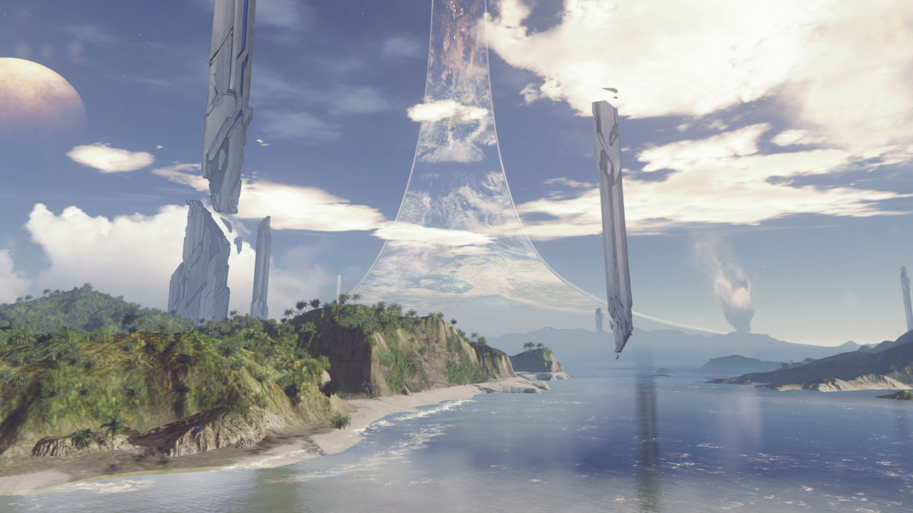

Halo 5 Guardians - Warzone Maps!
I love the enviroments these maps are based in, mainly Raid on Apex 7 but thats due to i feel like im on a lovely nostalga trip.
You can tell they looked at the campaign mission from Halo Combat Evolved, The Silent Cartographer. How you land on the beach to then instantly fighting the covernant, that plus its based on an island that lets you drive around the outside of it …etc. While half the time the match just ends up concentrated on the Spire, i sometimes like to just grab a ghost and go speeding around the map.